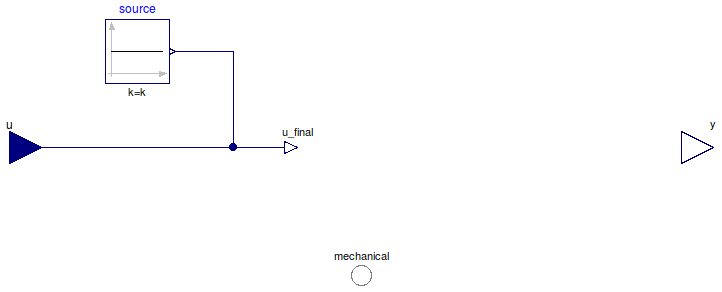

Table of Contents
- User's Guide
- Blocks
- Conditions
- Assemblies
- Regions
- Subregions
- Connectors
- Characteristics
- Units
- Quantities
- BaseClasses
Download
- Latest: FCSys-2.0.zip (**Please check back soon or contact kdavies4 at gmail.com.)

| Name | Description |
|---|---|
| Specify velocity (measure force) | |
| Specify force (measure velocity) | |
| Custom expressions | |
| Base classes (not generally for direct use) |
 FCSys.Conditions.Inert.Mechanical.Velocity
FCSys.Conditions.Inert.Mechanical.Velocity
| Type | Name | Default | Description |
|---|---|---|---|
| Axis | axis | Axis.x | Axis |
| ConditionType | conditionType | BaseClasses.ConditionType.Ve… | Type of condition |
| Axes with linear momentum included | |||
| Boolean | inclLinX | true | X |
| Boolean | inclLinY | false | Y |
| Boolean | inclLinZ | false | Z |
| Specification | |||
| Boolean | internal | true | Use internal specification |
| Constant | source | redeclare Modelica.Blocks.So… | Source of internal specification |
| Type | Name | Description |
|---|---|---|
| Translational | mechanical | Connector to exchange linear momentum |
model Velocity "Specify velocity (measure force)" extends BaseClasses.PartialCondition( final conditionType=BaseClasses.ConditionType.Velocity, u(final unit="l/T"), final y(final unit="l.m/T2") = mechanical.mPhidot[linAxes[axis]]); equation mechanical.phi[linAxes[axis]] = u_final; end Velocity;
FCSys.Conditions.Inert.Mechanical.Force
| Type | Name | Default | Description |
|---|---|---|---|
| Axis | axis | Axis.x | Axis |
| ConditionType | conditionType | BaseClasses.ConditionType.Fo… | Type of condition |
| Axes with linear momentum included | |||
| Boolean | inclLinX | true | X |
| Boolean | inclLinY | false | Y |
| Boolean | inclLinZ | false | Z |
| Specification | |||
| Boolean | internal | true | Use internal specification |
| Constant | source | redeclare Modelica.Blocks.So… | Source of internal specification |
| Type | Name | Description |
|---|---|---|
| Translational | mechanical | Connector to exchange linear momentum |
model Force "Specify force (measure velocity)" extends BaseClasses.PartialCondition( final conditionType=BaseClasses.ConditionType.Force, u(final unit="l.m/T2"), final y(final unit="l/T") = mechanical.phi[linAxes[axis]]); equation mechanical.mPhidot[linAxes[axis]] = u_final; end Force;
FCSys.Conditions.Inert.Mechanical.Custom
The expression to which the condition is applied (x)
must involve face.T and/or face.Qdot.
Extends from BaseClasses.PartialCondition (Partial model for a mechanical condition).
| Type | Name | Default | Description |
|---|---|---|---|
| Axis | axis | Axis.x | Axis |
| ConditionType | conditionType | BaseClasses.ConditionType.Cu… | Type of condition |
| Axes with linear momentum included | |||
| Boolean | inclLinX | true | X |
| Boolean | inclLinY | false | Y |
| Boolean | inclLinZ | false | Z |
| Specification | |||
| Boolean | internal | true | Use internal specification |
| Constant | source | redeclare Modelica.Blocks.So… | Source of internal specification |
| Real | x | mechanical.phi[linAxes[axis]] | Expression to which the condition is applied |
| Measurement | |||
| RealOutput | y | mechanical.mPhidot[linAxes[a… | Measurement expression |
| Type | Name | Description |
|---|---|---|
| input RealInput | u | Value of specified condition |
| Translational | mechanical | Connector to exchange linear momentum |
| Measurement | ||
| output RealOutput | y | Measurement expression |
model Custom "Custom expressions" extends BaseClasses.PartialCondition(final conditionType=BaseClasses.ConditionType.Custom, y=mechanical.mPhidot[linAxes[axis]]); Real x=mechanical.phi[linAxes[axis]] "Expression to which the condition is applied"; equation x = u_final; end Custom;